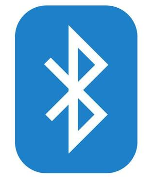

(PLACEHOLDER: INCOMPLETE PROJECT) Bluetooth Audio & Phone Charger Car Mount
Overview: Engineered a multifunctional car mount combining Bluetooth audio streaming and phone charging in a single, compact device. I handled end-to-end development, from hardware design and wiring to firmware programming and user testing.
Objectives & Outcomes
The goal was to create a sleek, reliable mount that plays audio over Bluetooth while providing regulated power to charge smartphones. I designed a high-efficiency boost converter circuit, integrated a Bluetooth audio module, and developed firmware to manage pairing and power delivery. The final prototype delivered stable audio performance and charging.
Key Skills & Technologies
- KiCad for schematic wiring
- Firmware development on a microcontroller for Bluetooth and power management
- Bluetooth A2DP protocol for stereo audio streaming
- Power electronics design: boost converter and battery protection
- 3D CAD (Fusion 360) for housing design and prototyping
Lessons Learned
I learned to debug complex mixed-signal circuits, manage BLE audio latency, and handle thermal constraints in a compact form factor.
Back to Projects